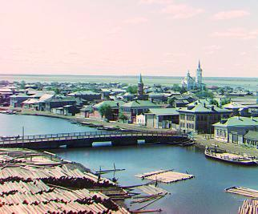

Sergei Mikhailovich Prokudin-Gorskii (1863-1944) was a man well ahead of his time. Convinced, as early as 1907, that color photography was the wave of the future, he won Tzar's special permission to travel across the vast Russian Empire and take color photographs of everything he saw including the only color portrait of Leo Tolstoy. And he really photographed everything: people, buildings, landscapes, railroads, bridges... thousands of color pictures!
His idea was simple: record three exposures of every scene onto a glass plate using a red, a green, and a blue filter. Never mind that there was no way to print color photographs until much later -- he envisioned special projectors to be installed in "multimedia" classrooms all across Russia where the children would be able to learn about their vast country. Alas, his plans never materialized: he left Russia in 1918, right after the revolution, never to return again. Luckily, his RGB glass plate negatives, capturing the last years of the Russian Empire, survived and were purchased in 1948 by the Library of Congress. The LoC has recently digitized the negatives and made them available on-line.
The purpose of this project is to use image processing techniques to reproduce color images from the given Prokudin-Gorskii Photo Collection.
We need to first split up this image into three channels and then align them so we can get a desirable colored image.
To measure how well the images match, we have two metrics: L2 Norm(also known as Sum of Squared Differences, named SSD) and normalized cross-correlation (NCC). NCC provides better result so I use NCC as my metric.
Naive Exhaustive search becomes expensive for large images, so I implemented Image Pyramid which aligns high resolution images efficiently.
The algorithm recursively scale down the image until the image is small enough. We perform an exhaustive search on the smallest image(which requires less computational effort to calculate the overall offsets), then propagating the best alignment offsets to higher resolution layers.
Besides, I have also tried different base channel and align sequence for alignments, while the changes in result are so slight that I just take this factor out of consideration.
Automatic Cropping identify the borders and cut them off. We use the Sober filter(which computes an approximation of the gradient of the image intensity function.) on the image so that we can compute the horizontal and vertical gradients for each pixel. Then the rows and columns with the maximum or minimum summed gradient are the borders. Once we find the borders for each channel, we select the one that crops the most and apply it to other channels.
I use the gray world algorithm. The gray-world algorithm assumes that the pixels are neutral gray on average because there is a good distribution of colors in the image. Therefore, we can estimate the pixel color by looking at the average color and comparing it to gray.
red displacement:[ 2 10 ] green displacement:[ 2 4 ]
red displacement:[ -4 56 ] green displacement:[ 0 24 ]
red displacement:[ 40 104 ] green displacement:[ 24 48 ]
red displacement:[ 12 124 ] green displacement:[ 16 60 ]
red displacement:[ 20 88 ] green displacement:[ 16 40 ]
red displacement:[ 12 108 ] green displacement:[ 8 48 ]
red displacement:[ 12 180 ] green displacement:[ 8 84 ]
red displacement:[ 2 4 ] green displacement:[ 2 -2 ]
red displacement:[ 36 108 ] green displacement:[ 24 52 ]
red displacement:[ 36 176 ] green displacement:[ 28 80 ]
red displacement:[ 12 112 ] green displacement:[ 12 52 ]
red displacement:[ 2 6 ] green displacement:[ 2 2 ]

red displacement:[ 32 88 ] green displacement:[ 4 44 ]
red displacement:[ -12 104 ] green displacement:[ 0 52 ]